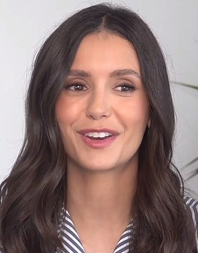

Séries de Televisão
Fonte: Wikipédia
The Vampire Diaries
The Vampire Diaries (bra: Diários de um Vampiro; prt: Diários do Vampiro) é uma série de televisão americana de drama adolescente sobrenatural desenvolvida por Kevin Williamson e Julie Plec, baseada na série literária de mesmo nome escrita por L. J. Smith. A série estreou na The CW em 10 de setembro de 2009 e concluiu em 10 de março de 2017, tendo exibido 171 episódios ao longo de oito de temporadas O episódio pilot atraiu a maior audiência para a The CW de qualquer estreia de série desde que a rede foi lançada em 2006;a primeira temporada teve uma média de 3,60 milhões de espectadores. Tornou-se a série mais assistida da rede antes de ser superada por Arrow. O programa recebeu inúmeras indicações a prêmios, ganhando quatro People's Choice Awards e muitos Teen Choice Awards. Em abril de 2015, a atriz principal Nina Dobrev, que interpretou Elena Gilbert, confirmou que deixaria o programa após sua sexta temporada. Dobrev voltou a gravar uma narração para o final da sétima temporada e retornou como estrela convidada no final da série. Em março de 2016, a CW renovou a série para uma oitava temporada, mas em julho daquele ano anunciou que a oitava temporada, composta por 16 episódios, seria a última do programa. Os conceitos e personagens desenvolvidos na série serviram para lançar uma franquia de mídia que inclui outras séries de televisão, webséries, romances e histórias em quadrinhos. A série de televisão The Originals (2013–2018) – que também foi ao ar na The CW – foi a primeira grande entrada nesta coleção de obras conectadas, seguida por um spin-off de The Originals intitulado Legacies (2018–2022), que também foi ao ar na The CW.
The Vampire Diaries
| No Brasil | Diários de um Vampiro |
|---|---|
| Em Portugal | Diários de um Vampiro |
| Criado por | Julie Plec |
| Baseado em | The Vampire Diaries, de L. J. Smith |
| Desenvolvido por |
Kevin Meade Williamson
Julie Plec |
| Gênero | Drama, sobrenatural, Fantasia sombria, Horror |
| Dirigido por | Marcos Siega |
Visão geral da série
A série se passa na cidade fictícia de Mystic Falls, Virgínia, uma cidade carregada de história sobrenatural. Ela segue a vida de Elena Gilbert, uma adolescente que acaba de perder os pais em um acidente de carro, quando ela se apaixona por um vampiro de 161 anos chamado Stefan Salvatore, que ela acha que é apenas um humano normal. O relacionamento deles se torna cada vez mais intrincado quando o misterioso irmão mais velho de Stefan, Damon Salvatore, retorna a Mystic Falls com um plano para trazer de volta seu amor do passado, Katherine Pierce, que é a doppelgänger de Elena. Embora Damon inicialmente guarde rancor contra seu irmão por forçá-lo a se tornar um vampiro, ele mais tarde se reconcilia com Stefan e se apaixona por Elena, criando um triângulo amoroso entre os três. Ambos os irmãos tentam proteger Elena enquanto enfrentam vários vilões e ameaças à sua cidade, incluindo Katherine. O passado dos irmãos Salvatore e a história da cidade, juntamente com seus segredos, são revelados por meio de flashbacks conforme a série avança.
Histórias adicionais giram em torno dos outros habitantes da cidade, mais notavelmente o irmão mais novo de Elena , Jeremy Gilbert, e a tia Jenna Sommers, suas melhores amigas Bonnie Bennett e Caroline Forbes, seus amigos em comum Matt Donovan e Tyler Lockwood, a irmã mais velha de Matt, Vicki Donovan, e seu professor de história e caçador de vampiros Alaric Saltzman. A política da cidade é orquestrada pelo conselho dos Fundadores, composto por descendentes das famílias fundadoras: os Fells, os Forbes, os Lockwoods, os Gilberts e os Salvatores. Eles protegem a cidade principalmente de vampiros e outras ameaças sobrenaturais, como lobisomens, bruxas, híbridos (lobisomem/vampiro) e fantasmas.
Elenco e personagens
Nina Dobrev  Nikolina Kamenova Dobreva (Sófia, 9 de janeiro de 1989), conhecida simplesmente pelo nome artístico Nina Dobrev, é uma atriz e produtora executiva búlgara radicada no Canadá. Ficou conhecida após ter interpretado as duplicatas Elena Gilbert, Katherine Pierce/Katerina Petrova, Amara na série The Vampire Diaries (2009–2015; 2017) e Tatia Charlotte Petrova em The Originals. como Elena Gilbert (temporada 1–6; temporada convidada 8), uma jovem órfã que se apaixona pelo vampiro Stefan Salvatore e mais tarde por seu irmão, Damon, criando um triângulo amoroso. Quando Stefan desliga sua humanidade após ser chantageado por Klaus, Damon tem a oportunidade de se aproximar de Elena. Isso faz com que ela seja ainda mais atraída para o mundo sobrenatural e resulta em sua luta para sobreviver a eventos sobrenaturais na cidade. Elena se torna uma vampira após os eventos do final da terceira temporada, mas toma a cura e se torna humana novamente na sexta temporada. No final da sexta temporada, a vida de Elena foi ligada à de Bonnie de tal forma que, enquanto Bonnie estiver viva, Elena permanecerá dormindo. Dobrev também interpreta a doppelgänger de Elena, Katerina Petrova, também conhecida como Katherine Pierce. Dobrev apareceu esporadicamente como Katherine nas temporadas subsequentes, com Katherine desempenhando um papel significativo na segunda e quinta temporadas. Dobrev também interpreta o progenitor dos sósias de Petrova e o verdadeiro amor de Silas, Amara, durante a quinta temporada, a quem ele procurou na vida após a morte por dois mil anos. Paul Wesley como Stefan Salvatore, um vampiro de bom coração e afetuoso e o completo oposto de seu irmão mais velho, Damon Salvatore. Mais tarde na série, Stefan retorna aos seus velhos hábitos como um Estripador para salvar Damon de uma mordida de lobisomem. Seu papel se torna mais antagônico, depois de ser forçado a desligar sua humanidade. Eventualmente, ele retorna ao seu eu de bom coração e carinho e se reconcilia com Elena, mas o relacionamento não dura muito. Ele se torna humano novamente na temporada final e se casa com Caroline na oitava temporada, mas é morto depois no final da série, quando ele se sacrifica junto com Katherine para salvar Mystic Falls. Wesley também interpreta seu sósia revelado, Silas, o primeiro ser imortal do mundo, na quarta e quinta temporadas. Wesley também interpretou outro sósia, Tom Avery, durante a quinta temporada. Ian Somerhalder como Damon Salvatore, o irmão mais velho e malévolo de Stefan. Ele é geralmente considerado egoísta e manipulador, usando humanos para seu próprio ganho sem consideração, mas depois começa a mostrar um lado mais atencioso. Ao longo da série, Damon consegue consertar seu relacionamento com Stefan e se torna o melhor amigo de Alaric e Bonnie. Embora seu amor por Elena seja inicialmente unilateral, ela começa a desenvolver sentimentos por ele enquanto trabalham juntos para salvar Stefan depois que ele cede ao seu lado Estripador. Eles começam a namorar na quarta temporada, depois que Elena se transforma em vampira, e continuam a ter um relacionamento intermitente até que Elena, agora humana, é colocada em seu sono profundo no final da sexta temporada. Steven R. McQueen como Jeremy Gilbert (temporadas 1–6; temporada convidada 8), irmão mais novo de Elena, na verdade revelado como seu primo biológico. Mais tarde, ele se torna um membro do The Five, um grupo de caça aos vampiros que lhe dá poderes sobrenaturais. Jeremy é morto na quarta temporada depois que Katherine o joga em Silas, que drena seu sangue. Ele é ressuscitado por Bonnie Bennett, seu interesse amoroso, no final da quarta temporada. Na sexta temporada, ele deixa Mystic Falls para caçar vampiros, sem o conhecimento de todos, exceto Alaric. Jeremy retorna a Mystic Falls no episódio final depois que a maldição de Elena é quebrada, e começa a trabalhar como professor no Internato Salvatore para Jovens e Superdotados que Alaric e Caroline abrem. Sara Canning como Jenna Sommers (temporadas 1–2; temporadas convidadas 3, 5 e 8), tia e guardiã legal de Elena e Jeremy após a morte de seus pais. Embora seja jovem, ela se esforça para ser um modelo para Elena e Jeremy e cuidar deles. Ela sai com Alaric depois que ele se muda para a cidade no meio da primeira temporada. Jenna foi morta na segunda temporada durante o ritual híbrido de Klaus após ser transformada em vampira. Kat Graham como Bonnie Bennett, A melhor amiga de Elena e Caroline e uma bruxa muito poderosa. Ela morreu inúmeras vezes, mas sempre encontrou uma maneira de retornar. Ela desenvolve e controla seus poderes com a ajuda de sua avó, Sheila ou "Grams", outra bruxa da família Bennett. Ela geralmente é capaz de usar sua magia para ajudar o grupo e, embora inicialmente odeie vampiros, principalmente Damon, ela acaba se aquecendo para eles; ela e Damon se tornam melhores amigos depois de ficarem presos em um mundo prisão com ele por quatro meses durante a sexta temporada. Bonnie perdeu e recuperou sua habilidade de fazer mágica várias vezes ao longo do show. Ela passou a segunda à quinta temporadas em um relacionamento intermitente com o irmão de Elena, Jeremy, e mais tarde se envolveu com Enzo. Na sétima temporada, Bonnie enfrenta o desafio de ter recebido a maldição dos caçadores de Rayna Cruz, o que coloca todos os seus amigos vampiros em risco. No final da série, Bonnie quebra o feitiço do sono em Elena e deixa Mystic Falls para viajar pelo mundo. Candice King como Caroline Forbes, A melhor amiga de Elena e Bonnie, que costumava ser insegura e às vezes com ciúmes de Elena pela atenção que ela recebia, muitas vezes se sentindo em segundo lugar. Depois de se transformar em uma vampira na segunda temporada, ela se torna mais atenciosa e simpática. Neurótica, mas adorável, Caroline tem sido o interesse amoroso de muitos personagens masculinos. Ela inicialmente serve como brinquedo de Damon na primeira temporada, pelo qual ela o odeia, mas depois eles se tornam amigos. Depois, ela tem relacionamentos sérios com Matt, Tyler, Alaric e Stefan. Ela foi por muito tempo o assunto da adoração de Klaus, com quem ela dorme na quinta temporada também. Caroline dá à luz as filhas gêmeas de Alaric e Jo depois de engravidar delas por meio de um feitiço lançado pelo Gemini Coven e se torna mãe delas, já que Jo é morta na sétima temporada. Ela se casou com Stefan pouco antes de sua morte na oitava temporada e consertou seu relacionamento com Damon. Caroline cria os gêmeos com Alaric, que ela vê como seu; ela abre o internato Salvatore para jovens e superdotados com Alaric. Zach Roerig como Matt Donovan, irmão mais novo de Vicki e amigo de infância e ex-namorado de Elena, que se envolveu romanticamente com Caroline na primeira e segunda temporadas. Matt e Caroline continuam bons amigos mesmo depois de terminarem durante a segunda temporada. Matt não quer participar dos eventos sobrenaturais em sua cidade e mais tarde entra em desacordo com os vampiros quando se torna um policial e tenta proteger a cidade deles. Ele se torna o xerife na oitava temporada e planeja concorrer a prefeito. Kayla Ewell como Vicki Donovan (temporada 1; temporadas recorrentes 3 e 8; temporadas convidadas 2 e 5), a irmã mais velha viciada em drogas de Matt. Ela parece estar namorando Tyler, mas também está interessada em Jeremy. Ela é bastante insegura sobre si mesma, sendo pobre e uma estranha. Ela é transformada em vampira por Damon e é morta por Stefan logo depois devido a ela ficar fora de controle e atacar Elena. Após a destruição do Outro Lado, o limbo sobrenatural onde ela residia após sua morte, Vicki foi enviada para o Inferno. Michael Trevino como Tyler Lockwood (temporadas 1–6; temporadas convidadas 7–8), um lobisomem, mais tarde transformado em um híbrido por Klaus, o melhor amigo de Matt e filho do prefeito de Mystic Falls. Sua família carrega um traço licantrópico, sendo descendente de um antigo clã de lobisomens. Seu pai, o prefeito, tinha o gene, mas não desencadeou a maldição. Seu tio Mason também era um lobisomem desencadeado, que foi morto por Damon na segunda temporada. Tyler foi transformado no primeiro híbrido bem-sucedido por Klaus. No final da quinta temporada, ele retorna a ser apenas um humano. Ele reativa seu gene de lobisomem e deixa a cidade no final da sexta temporada. Ele aparece em alguns episódios da sétima temporada, protegendo o caixão de Elena. Matt Davis como Alaric Saltzman (temporadas 1–3, 6–8; temporadas convidadas 4–5), um professor de história, caçador de vampiros e interesse amoroso de Jenna nas duas primeiras temporadas. Davis deixou o show no final da terceira temporada depois que Alaric foi morto. Seu personagem retornou como regular a partir da sexta temporada, depois que ele foi ressuscitado na quinta temporada. Seu vampirismo é arrancado pela magia, transformando-o em um humano mais uma vez, depois de ser salvo por Josette Laughlin (Jodi Lyn O'Keefe); os dois começam a namorar. Jo engravida e eles planejam se casar, mas ela é assassinada por seu irmão Malachai em seu casamento. O coven Gemini, a família bruxa de Jo, foi capaz de transferir os bebês para o útero de Caroline, e ela dá à luz as filhas gêmeas de Alaric e Jo - Josie e Lizzie, nomeadas em homenagem à sua mãe biológica Josette e à mãe de Carolines, Elizabeth. Caroline e Alaric se mudam para Dallas juntos e começam um relacionamento, mas terminam quando Caroline decide ficar com Stefan após seu retorno no final da sétima temporada. Alaric estabelece o Salvatore Boarding School for the Young & Gifted com Caroline, com quem ele cria os gêmeos, enquanto Jo cuida dele da vida após a morte. Joseph Morgan como Klaus Mikaelson (temporadas 3–4, temporada recorrente 2; temporadas convidadas 5 e 7), o Híbrido Original, que começa a construir um exército de novos "híbridos", que são metade vampiros e metade lobisomens. Durante a terceira temporada, Klaus começou a desenvolver sentimentos por Caroline e se apaixona por ela. Klaus eventualmente se muda para Nova Orleans, onde seu personagem é o protagonista do spin-off The Originals. Michael Malarkey como Enzo St. John (temporadas 6–8; temporada recorrente 5), um vampiro anteriormente sob a prisão da sociedade Augustine. Ele era companheiro de cela de Damon Salvatore na década de 1950, quando este último foi capturado pelos Augustines. Ele e Damon reviveram sua amizade enquanto ele procurava por sua amante perdida, Maggie. No episódio da quinta temporada "Man on Fire", Enzo desligou sua humanidade após descobrir a verdade sobre a morte de Maggie. Mais tarde, ele é morto por Stefan, tendo seu coração arrancado. Ele foi ressuscitado no final da quinta temporada e se torna o interesse amoroso de Bonnie, antes de ficar sob o controle do monstro no cofre no final da sétima temporada. Ele é morto por um Stefan sem humanidade na oitava temporada, tendo seu coração arrancado novamente. Ele cuida de Bonnie na vida após a morte.